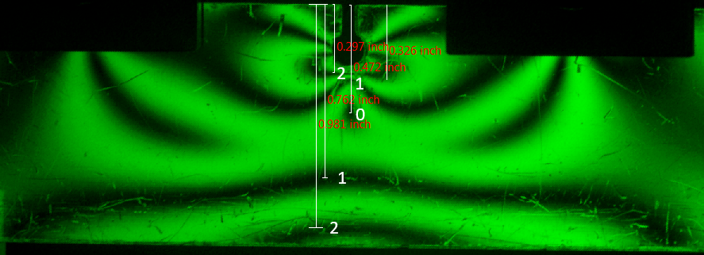
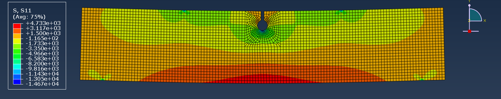

13 / Experimental stress analysis / Completed laboratory study
AE461 · Four-person laboratory team
Measuring notch stresses with photoelasticity and FEA
Our four-person team used a polariscope to visualize bending stresses, calibrated a fringe constant from an unnotched specimen, and compared notched-beam results with analytical approximations and finite-element output. The study connected visible fringe patterns to localized stress at notch tips.
- Team contribution
- Co-authored the team’s experimental stress-analysis report
- Tools
- Photoelasticity · Four-point bending · Stress concentration · Abaqus
- Outcome
- Observed notch stress concentrations; U-notch approximation agreed more closely with FEA

From fringes to stress
The experiment placed transparent beams in four-point bending inside a monochromatic dark-field polariscope. Camera images recorded the fringe patterns at several applied loads.
Using the unnotched beam as the calibration specimen, the team related fringe order, thickness, and the material fringe constant to stress. Comparing fringe locations through each section revealed how a notch changes the stress distribution.
Compare experiment, approximation, and FEA
The report gives Abaqus notch-tip compressive stresses of approximately 14.67 MPa for the U-notch and 19.95 MPa for the V-notch. It found closer agreement between the U-notch result and its analytical approximation.
The larger V-notch discrepancy was attributed to using an approximate stress-concentration relation outside its stated geometry range. The report therefore treats the approximation’s applicability as part of the comparison, rather than claiming uniform agreement across both notches.
{kind=link}

Conclusion & contribution
The team concluded that notches concentrate stress near the newly exposed edges, visible through denser fringes and higher inferred stresses. Additional polariscope observations, including a horseshoe specimen, identified peak-stress locations qualitatively.
I am a coauthor of the laboratory report. Because it does not assign individual calculations, measurements, or Abaqus work, those activities are presented as team work.
{kind=link}